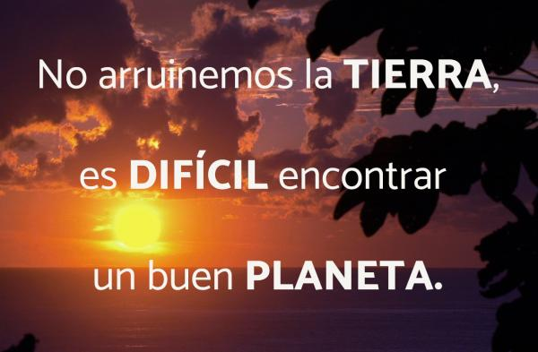

Reciclaje y separación de basuras
Los residuos son un problema que ha aumentado en todo el mundo, pues vivimos en una sociedad que se ha acostumbrado a usar y botar plásticos, latas y vidrios, que pueden tardar muchos años —incluso siglos— en descomponerse.

¿Qué hacer con las basuras?
En la finca tenemos varias posibilidades sencillas de contribuir a evitar la contaminación generada por la basura:
Reducir: es evitar el uso excesivo de empaques, como bolsas plásticas. En tiempos de los abuelos, las cosas se empacaban en envolturas de hojas de plátano o en cajas de madera y se usaban más los canastos de caña, mimbre, o fibras de palma.
Reutilizar: se trata de limpiar los envases de vidrio, plástico o metal y volver a usarlos. Nunca se deben usar, para guardar alimentos, los recipientes que han tenido productos químicos o venenos.
Reciclar: podemos usar viejos productos para hacer otros nuevos. Los envases de plástico se pueden reutilizar re- cortándolos para convertirlos en materas, semilleros o recipientes donde guardar objetos. Una llanta vieja recortada y pintada se puede convertir en matera de diferentes formas o en el asiento de un columpio. Los guacales de frutas forrados con plástico por dentro también pueden ser semilleros.
Recuperar: es utilizar residuos como combustible para calentar la chimenea o cocinar. Se puede hacer con los periódicos, bolsas de papel, cajas de cartón, madera de guacales de frutas, muebles viejos y deteriorados.
Separación de la basura, desechos
Para poder hacer un buen uso de las basuras de la finca debemos tener claro su procedencia y posibilidades futuras. Las basuras se dividen en dos grandes grupos:
Basuras orgánicas: cáscaras, comida sobrante, madera, papel, cartón y residuos de cosecha como bagazo de caña, pulpa de café, vainas de fríjol, entre otros.
Todas estas basuras se aprovechan en la finca convertidas en abono o, como en el caso del papel, la madera y el cartón, en la producción fuego.
Basura inrgánica: vidrios, plásticos, metal y residuos de pinturas, disolventes e insecticidas.
Como esta basura no podemos devolverla a la tierra en forma de abono, debemos separarla y almacenarla limpia para darle nuevos usos dentro de la finca o entregarla a una empresa recicladora.
La separación más sencilla es la siguiente:
Vidrios: botellas, envases de vidrio.
 Plásticos: bolsas, envolturas de alimentos y recipientes de elementos de aseo del hogar.
Plásticos: bolsas, envolturas de alimentos y recipientes de elementos de aseo del hogar.
 Metal: envases de enlatados, latas de gaseosa, recipientes de aceite y combustibles. Objetos viejos como llaves, candados, herramientas, ollas deterioradas.
Metal: envases de enlatados, latas de gaseosa, recipientes de aceite y combustibles. Objetos viejos como llaves, candados, herramientas, ollas deterioradas.
 Otros: espuma plástica, pilas. Los residuos de aceite, pintura, disolventes, insecticidas, envases de aerosoles, deben mantenerse cerrados y en lo posible ser llevarlos al botadero municipal de basuras, pues son residuos peligrosos. No se deben quemar ni enterrar ya que contaminan el suelo, el agua y el aire.
Otros: espuma plástica, pilas. Los residuos de aceite, pintura, disolventes, insecticidas, envases de aerosoles, deben mantenerse cerrados y en lo posible ser llevarlos al botadero municipal de basuras, pues son residuos peligrosos. No se deben quemar ni enterrar ya que contaminan el suelo, el agua y el aire.